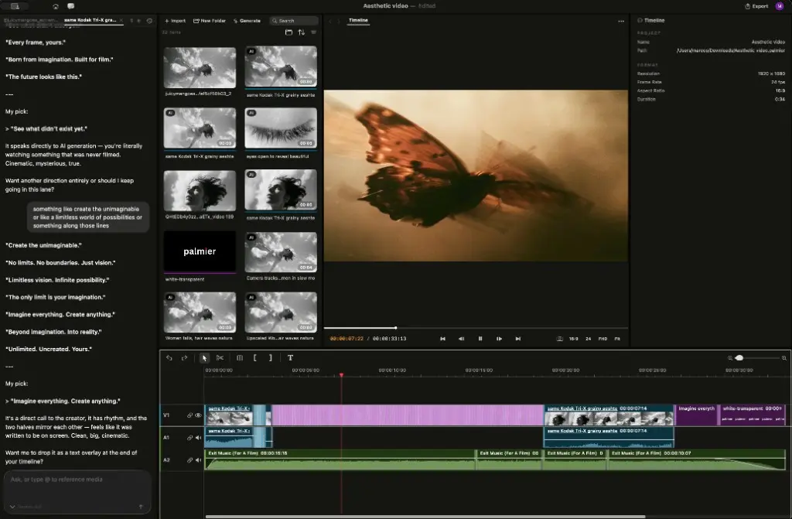
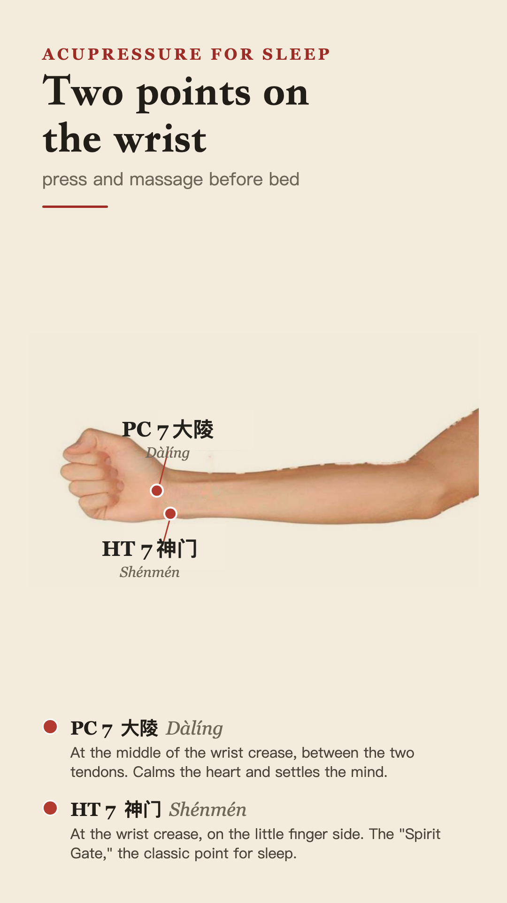
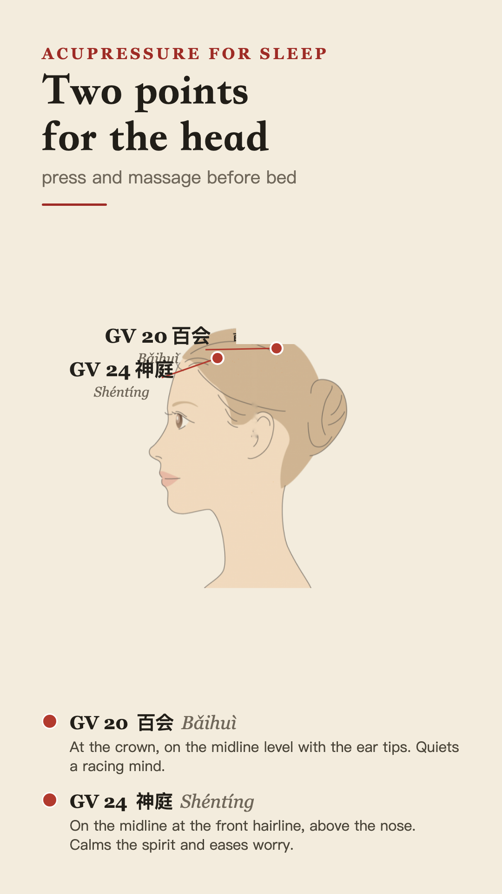

You stay in the editor. AI fetches the b-roll, the music and the captions; you arrange them by feel. This is Palmier Pro.
You describe the edit in words. The agent writes and renders the whole video. You never touch the code. This is HyperFrames.

You are making a run of shorts that must look like a set, or you want to turn one good edit into a tool the whole team reuses.
It is the same loop from workshop two in new clothes: brief on paper, build a rough first version, take a taste pass, then ship. The material changed, the loop did not.


Browse hyperframes.dev/design for ready-made looks. Copy the one closest to your idea, then change only the words and one image.
Show and tell in two weeks. Bring the clip and the card it produced.
Every short we ship goes on the team gallery. Watching it fill up is the scoreboard.